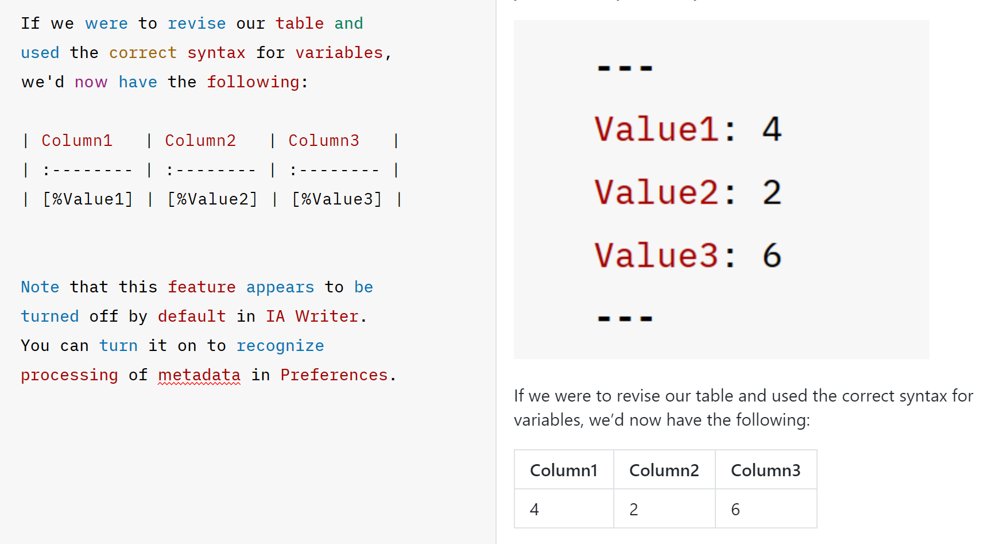

It has been over a month since I purchased a license of iA Writer. Regrettably, I have not spent time exploring this fantastic tool as much as I should have as I was busy with personal projects: one of which involving a migration of my website from WordPress to Quarto/GitHub Pages. Before I get into a review of iA Writer, I want to provide more context that led to the decision in purchasing a license in the first place.
Background
Many of us are familiar with Microsoft Word and the suite of products that comes pre-installed on Windows operating systems. Those who are digital natives might not know of anything different.
What you might not know is that Microsoft Word and similar products are known as “What you see is what you get” or WYSIWYG editors with buttons for visual picks and clicks (WYSIWYG, 2022).
While these editors are great in their own ways, they also come with challenges for some.
Challenges
Tables that are difficult to integrate…
Text that randomly changes fonts in the middle of writing…
Inconsistent indentations with an unknown cause…
These are the things that have been sticking out a lot more to me recently.
Familiarity with a product or process, despite its challenges, is akin to the another familiar phrase that is painted as the “villain” in many business books on innovation: “We’ve always done it this way.”
Businesses as a whole are not the only places where we can question the status quo. We can do that with our own personal workflows.
Evaluating Workflows
For about a year and a half, I have been evaluating how much time has been going into various activities in my day-to-day life with the help of Clockify. I do it to build business cases for process improvement as well as for personal insights.
I found that a decent amount of my time falls under administration and management activities. A wise person once told me about investing in optimizing the things I use the most. The application of that advice was intended for things such as investing in comfortable shoes or a nice bed mattress. But I think it applies here too.
Productivity gains in these areas are essential to make room for more value add activities. The logic is that we can focus more on the “why” of what we do once we optimize the “how.”
For this reason, I looked for ways to improve upon my own personal workflows, up to and including rethinking the concept of word processing altogether.
WYSIWYG editors may be presented as the only option. However, they are simply a default or common option. When you think about it like that, it opens up a new realm of possibilities for those who may want to try something different.
Introduction to Markdown
My discovery of Markdown came in perfect timing.
I was in the middle of watching a replay of an R-Ladies Paris Meetup for an intro to {ggplot2} with {R}. The workflow for the meetup involved exploring RMarkdown (.Rmd) files and running snippets of {R} code.
I was fascinated by the nicely formatted RMarkdown documents. Who knew that a couple ## could denote headers, hyperlinks could be conveyed with brackets and parentheses, and text could be emphasized with * to denote bold weights and italic styles without my hands ever leaving the keyboard. And there are plenty more examples.
From there, I wondered if it was possible to incorporate Markdown in “everyday situations” beyond coding and professional scientific reports.
After going down further rabbit holes, I learned that multiple “flavors” of Markdown exist (Faraday Academy, 2021). I then quickly realized it could get complicated if you didn’t have a means to properly render those documents for a desired output.
For instance, I casually and briefly tested Obsidian, which could be excellent for personal notes, but it didn’t appear to be an ideal solution for creating everyday documents that needed to be readily exported to .docx. A similar situation was the result when I tried writing Markdown in VSCode. It’s not that it couldn’t be done. The methods and goals were different from what I wanted.
Refining My Goals
My conditions for a viable alternative to a WYSIWYG editor for “everyday situations” involved capabilities such as exporting to .docx, .pdf, and .html in a way that I found acceptable and without jumping through a lot of hoops to do so. The viable solution also had to have “previews” of my formatted text and support for a variety of Markdown features.
One of the most helpful resources in making sense of the possibilities was the Markdown Guide. Not only did I purchase Matt Cone’s book on the topic, I learned that not all Markdown editors are created the same (Cone, 2022). The tools section on the Markdown Guide website was incredibly valuable in helping me determine my next steps.
Now that you have a lot more background on how I got here, I will now go into a review of what I like about iA Writer, my Markdown editor of choice (aside from using RStudio and Quarto, of course).
Syntax Highlighting and Style Check
My website is currently hosted on GitHub Pages. If you look at my “contributions,” you’ll see that I’m incredibly “active” in updating my blog posts. A lot of this has to do with me finding things I want to reword after publishing. I create my blog posts with RStudio/Quarto. What I have noticed so far is that beyond basic spell check, the RStudio IDE is not necessarily geared for refining prose.
If I were to compare iA Writer and RStudio, I’d say that while both can support code and prose, iA Writer focuses more on prose, and RStudio focuses more on code. There is nothing wrong with that. It’s all about being aware and using tools for their perceived strengths.
iA Writer provides a great Syntax Highlighting tool for highlighting adverbs, verbs, conjunctions, nouns, and adjectives. In addition, it can check for clichés, fillers, redundancies, and even a special custom list of words that you don’t want to use (iA Writer, 2022).
Clean and Simple Interface
With a click of a button, you can switch to “Night Mode,” which will make the entire user interface turn a darker color and leave all the colored text. This is pleasing to the eye as someone who has taken a liking to a “coding” environment in various color schemes.
I like the “Full screen mode” where the top “ribbon” stays out of view until you move your mouse up to the top of the screen. This is a huge contrast compared to a large ribbon that shows up by default in Microsoft Word, for example.
If you forget any Markdown syntax, you can use the Format drop down menu to pick and click various formatting options or gain insights on keyboard shortcuts.
From my current understanding, there are three main sections of the user interface:
Library
Main typing area
Preview Pane
Various sections can be turned off. I personally like leaving the Preview Pane turned on because I can see what my Markdown formatted text looks like. In addition, I like having the Library view turned on. I can drag and drop images and see all the headers in my writing thus far. I can click and jump to different headers that I created with Markdown syntax (example: #, ##). And speaking of headers, a small but nice touch is that the # part of the header syntax places itself outside your writing, as shown with the “Snippets” header. That’s usually not what I see when writing Markdown syntax in other editors.
Snippets
Snippets are a great way to save time in placing text.
My current understanding is that you come up with a “short-code” that represents the full text you want placed. Hitting the Tab key after you type your short-code will result in the full text taking its place.
Among the default ones included in iA Writer, here is an example of one I created for a sign off cadence.
Tables and Variables
The focus of this review has been centered more around specific features that I think set iA Writer apart instead of on Markdown itself. I would be remiss if I did not include what I think is an amazing feature that takes it further than what Markdown offers on its own.
Tables can be created in Markdown with a series of characters like these |—|.
| Column1 | Column2 | Column3 |
|---|---|---|
| Value1 | Value2 | Value3 |
iA Writer will generate a table with a left justification with the syntax above.
The part that I think is an absolute game changer is integrating the Markdown table syntax with the variables that iA Writer supports. To be clear, this is an added feature in the iA Writer platform beyond typical Markdown.
According to the iA Writer Markdown User Guide, there is a section on Metadata that talks about support for variables.
At the beginning of your document, you can set variables such as a customer name, date, and more. Then, every time you use those variables throughout a document, iA Writer will put in the correct value. To be fair, document properties do exist in Microsoft Word to allow for this, but the options appear to be limited. In iA Writer, you create any variable you want within seconds (iA Writer, 2022).
If we were to revise our table and use the correct syntax for variables, we’d now have the following:
| Column1 | Column2 | Column3 |
|---|---|---|
| 4 | 2 | 6 |
Note that this feature appears to be turned off by default in iA Writer. You can turn it on to recognize processing of metadata in Preferences. Also note that this is one of those features that will not automatically transfer to other Markdown editors.

Output
By now, I hope I have opened your eyes to the possibilities using Markdown for your everyday writing needs. The most important part about any viable solution is the output.
iA Writer offers export to HTML, PDF, Markdown, and Word. In my experience, the exports have looked exactly as I would have expected without surprises of things formatting differently upon export.
Now What?
At the time of this writing, iA Writer costs $30 for a license. In my opinion, it is well worth it. However, iA Writer is not the only tool out there. In fact, some of the tools you may use today may even support Markdown to varying degrees such as MS Teams and Google Docs. There are also online tools such as Dillinger if you wanted to try it out for yourself before finding the best tool for you. The key is to understand what your goals are, and then you can build the solution around that. Maybe Markdown is a solution for you.
---
Sources Cited:
Academy, F. (2021, March 24). Learn markdown in 30 minutes! YouTube. Retrieved December 4, 2022, from https://www.youtube.com/watch?v=bTVIMt3XllM
Cone, M. (n.d.). Markdown Guide. Retrieved December 4, 2022, from https://www.markdownguide.org/
iA Writer. (2022, November 28). Retrieved December 4, 2022, from https://ia.net/
Paris, R.-L. (2022, October 14). Introduction to {ggplot2} in R by Tanya Shapiro | R-ladies paris. YouTube. Retrieved December 4, 2022, from https://www.youtube.com/watch?v=EnNWkF9Jtj4
Wikimedia Foundation. (2022, November 10). Digital native. Wikipedia. Retrieved December 4, 2022, from https://en.wikipedia.org/wiki/Digital_native
Wikimedia Foundation. (2022, November 23). WYSIWYG. Wikipedia. Retrieved December 4, 2022, from https://en.wikipedia.org/wiki/WYSIWYG